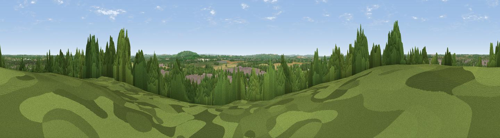

Graven Hill
#33008 in England · top 68% of its area beats it · near AmbrosdenThe view, rendered

A 360° render of this exact spot computed from the terrain model, tree cover and land cover — summer colours, afternoon light, calibrated against photographs of famous viewpoints. Real trees, hedges and buildings will differ in detail.
The panorama
Grey silhouette: terrain skyline in each direction (720 bearings, Earth curvature and refraction included). Dashed green: skyline with trees (+15 m) and buildings (+8 m) as obstacles. Blue strip: how far the ground is visible on each bearing.
Where the view opens
Wedge length = distance to the farthest visible ground on that bearing (vegetation-aware). Rings at 10, 25 and 50 km.
What fills the view
40% grassland · 23% woodland · 21% built-up · 16% cropland
Angular shares of the visible panorama (visual magnitude), not map area. Landscape diversity 0.59 (0–1 Shannon).
Key numbers
More beautiful places nearby
The staircase of upgrades: each row has a higher view potential than everything closer. Driving times are estimates from straight-line distance, calibrated against real road routing — check an actual route before setting out.
| Place | Direction | Drive | Score |
|---|---|---|---|
| Viewpoint near Arncott | SE · 4 km | ~10 min | 45.5 |
| Viewpoint near Piddington | SE · 7 km | ~14 min | 61.1 |
| Viewpoint near Boarstall | SE · 7 km | ~15 min | 61.7 |
| Muswell Hill | SE · 7 km | ~15 min | 67.9 |
| Viewpoint near Chinnor | SE · 27 km | ~43 min | 74.5 |
| Coombe Hill Monument | ESE · 29 km | ~46 min | 75.5 |
| Viewpoint near Woolstone | SW · 45 km | ~65 min | 76.7 |
| Viewpoint near Meon Vale | WNW · 48 km | ~69 min | 77.0 |
51.87884, -1.14613 · source: osm peak · position refined by local search. Computed location — check access rights before visiting.